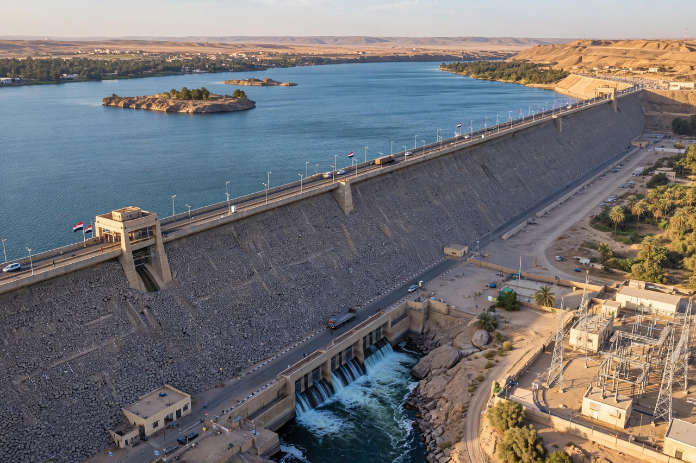

| Aswan High Dam | |
|---|---|
 | |
| Location | Aswan, Egypt, on the Nile |
| Construction | 1960–1970; inaugurated 1971 |
| Height / length | 111 m / 3,830 m |
| Reservoir | Lake Nasser, 132 km³ live storage |
| Power output | 2,100 MW |
The Aswan High Dam (Arabic: السد العالي) is an embankment dam across the Nile at Aswan in southern Egypt, built between 1960 and 1970 with Soviet finance and engineering assistance. One of the largest dams in the world, it ended the Nile's annual flood cycle, created Lake Nasser — one of the largest artificial lakes on Earth — and supplies Egypt with irrigation water and a major share of its electricity.
The older Aswan Low Dam (1902, twice heightened) could not store a full year's flood. After the 1952 revolution, Gamal Abdel Nasser's government sought a high dam; when the United States and Britain withdrew financing in 1956, Nasser nationalised the Suez Canal — triggering the Suez Crisis — and turned to the Soviet Union, which funded and helped design the project. Construction ran from 1960 to 1970; the dam was officially inaugurated in January 1971.
The dam stores the entire annual flood in wet years, enabling perennial irrigation and multiple cropping, protects against drought sequences (notably in the 1980s) and catastrophic floods, and its twelve 175 MW turbines long supplied about half of Egypt's electricity (now nearer a tenth as demand has grown). Against this stand the loss of flood-borne silt that once fertilised fields and rebuilt the Nile Delta, coastal erosion, and the displacement of over 100,000 Nubian people in Egypt and Sudan.
The rising lake threatened the temples of Nubia, prompting UNESCO's great salvage campaign of 1960–1980: the temples of Abu Simbel were cut into blocks and reassembled above the water, and the Philae temple complex was moved stone by stone to nearby Agilkia Island. Several temples were gifted abroad in gratitude, including the Temple of Dendur (New York) and the Temple of Debod (Madrid).